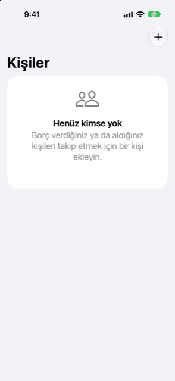

Kılavuz › Hesaplar, kartlar ve kişiler
Kişiler: verilen ve alınan borçlar
Verdiğiniz ya da borçlu olduğunuz para, kişi kişi.
Kişiler, para verdiğiniz ya da borç aldığınız her kişiyle bir bakiye tutar. Borç vermek harcama değildir; borcun geri ödenmesi de gelir değildir: para hesabınızla kişi arasında hareket eder, böylece harcama ve gelir rakamlarınız etkilenmez.

Ne zaman kullanılır
- Birine para verdiniz ve kimin kime ne kadar borçlu olduğunu hatırlamak istiyorsunuz.
- Bir aile üyesinden ya da bir arkadaştan borç aldınız ve hâlâ ne borçlu olduğunuzu görmek istiyorsunuz.
- Ödemelerin harcama ve gelir rakamlarınızın dışında tutulmasını, ama paranın yine de hesaplarınıza girip çıkmasını istiyorsunuz.
Adım adım
- Plan'ı açın; ardından Kişiler: verilen ve alınan borçlar'ı açın ve Ekle düğmesine dokunun.
- Yeni kişi başlıklı kutuya kişinin adını yazın ve Ekle düğmesine dokunun.
- Kişiyi listeden açın.
- Kayıt altında olan biteni seçin: Borç verdim, Borç aldım, Bana borcunu ödediler ya da Onlara borcumu ödedim.
- Tutarı, paranın hareket ettiği hesabı ve tarihi girin; sonra Kaydet düğmesine dokunun.
Kişinin bakiyesi kimin kime borçlu olduğunu gösterir: pozitif, sizden borçlu oldukları anlamına gelir; negatif, sizin onlara borçlu olduğunuz anlamına gelir. İki tarafta da borç kalmadığında Hepsi kapandı yazar.
Bilmenizde yarar var
- Bir kişiyi Hesaplar'dan da ekleyebilirsiniz: artı düğmesine dokunun, sonra Kişi ekle.
- Kişiler ayrıca Hesaplar sayfasında, Kişiler altında görünür; her birinde kimin kime ve ne kadar borçlu olduğu yazar.
- Borç vermek ya da borcun geri alınması asla harcama ya da gelir sayılmaz. Para hesabınızla kişi arasında hareket eder ve başka hiçbir yere gitmez.
- Bir kişinin birden fazla para biriminde bakiyesi olabilir. Her bakiye kendi para biriminde tutulur; liste her biri için bir satır gösterir.
- Başlangıçta zaten var olan bir borç eklemek için kurulum rehberini kullanın. Krediler ve borçlar adımında Ekle düğmesine dokunun, sonra Kişiyle para.
- Bir bakiye geri ödenmeyecekse kişiyi açın ve sayfanın altındaki düğmeyi kullanın: size borçlu olunan, geri ödenmeyecek parayı silin ya da borçlu olduğunuz şeyi affedilmiş olarak işaretleyin.
- Kaydettiğiniz bir ödeme, girdiğiniz gün gerçek parayı hareket ettirir. O günden itibaren hesap bakiyelerinizde vardır ve tahmin o bakiyelerden başlar.
İlgili
Anlaşılmayan ya da eksik bir şey mi var? support@raveniq.ai adresine yazın ve hangi sayfa olduğunu belirtin.